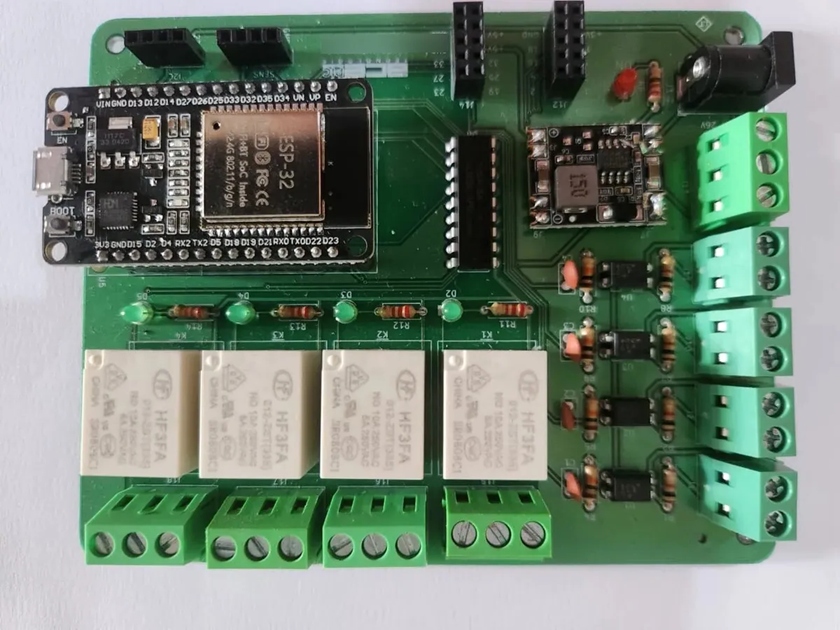

Automação Residencial (Status: Em Desenvolvimento)
Resumo
Projeto e desenvolvimento de uma placa de circuito impresso (PCB) dedicada para automação
residencial integrada, focando no ciclo completo de hardware de produto.
Etapas do Projeto:
- Unidade de Processamento: Microcontrolador ESP32 gerenciando o firmware e conectividade sem fio.
- Atuadores & Sensores: Circuitos de acionamento isolados com relés para cargas de potência e interface de entrada condicionada para sensores de presença.
- Foco Técnico: Aplicação prática de circuitos analógicos e digitais, compatibilidade eletromagnética, proteção contra ruídos e design de produto robusto.
Conhecimentos: KiCad (PCB Layout), Eletrônica Digital, Eletrõnica Analógica.
